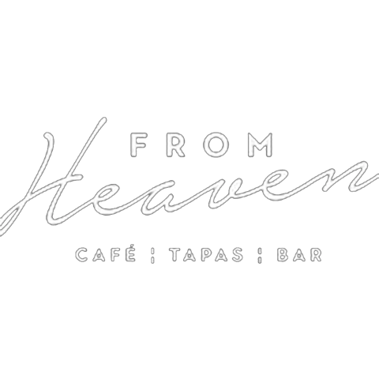

Holen Sie sich den Überblick mit Axyom.
Gestalten Sie Ihren Betrieb effizient.
Axyom erledigt, was Sie heute von Hand machen.
Termine, Offerten, Rechnungen, Bestellungen und interne KI: massgeschneidert für Ihren Betrieb. Entwickelt in Liechtenstein und der Schweiz.
Ein System statt mehrerer Tools.
Ihre Abläufe bleiben. Die Handarbeit verschwindet. Sie geben frei.
Kennenlernen
Wir lernen Ihren Betrieb kennen
Wir lernen Ihre heutige Arbeitsweise und Ihre Abläufe mit den bestehenden Tools kennen.
Passgenau
Keine neuen Tools. Keine Umstrukturierung.
Wir bauen Ihr Tool so, dass es sich ohne grossen Aufwand in Ihren Betrieb integrieren lässt.
Erweiterbar
Ihr eigenes System – nach Belieben anpassbar
Ihr hauseigenes Tool lässt sich jederzeit weiterentwickeln und wächst mit Ihrem Betrieb.
Kennenlernen
Passgenau
Erweiterbar
Für jeden Betrieb.

«Durch Axyom habe ich die Fleissarbeit abgegeben — ohne jemanden dafür einzustellen und ohne meine Abende dafür herzugeben.»
From Heaven · Café-Tapas-Bar, Bad Ragaz
Unser Versprechen
Worauf Sie sich verlassen können
ehrlich.
Klare Aussagen statt grosser Versprechen. Sie erfahren von Anfang an, was Ihr System leistet und wo seine Grenzen liegen.
Was Sie von uns erwarten dürfen.
Persönliche Betreuung
Sie haben eine feste Ansprechperson, die Ihren Betrieb kennt. Direkt erreichbar, ohne Ticketsystem und ohne Warteschleife.
Ehrliche Einschätzung
Wir sagen Ihnen vor dem Projekt, was Automatisierung in Ihrem Betrieb leisten kann und was nicht. Klare Erwartungen, keine Überraschungen.
Aus der Region
Entwickelt in Liechtenstein und der Schweiz. Kurze Wege, persönliche Termine vor Ort und Betreuung in Ihrer Sprache.
Volle Kontrolle
Jedes System arbeitet Ihnen zu. Die Entscheidungen bleiben bei Ihnen, und nichts verlässt den Betrieb ohne Ihre Freigabe.
Erzählen Sie uns von Ihrem Betrieb.
Unverbindlich. Wir besprechen Ihre Abläufe und geben Ihnen eine ehrliche Einschätzung.
Kontakt@axyom.ch
© 2026 Axyom
Liechtenstein & Schweiz
Liechtenstein & Schweiz